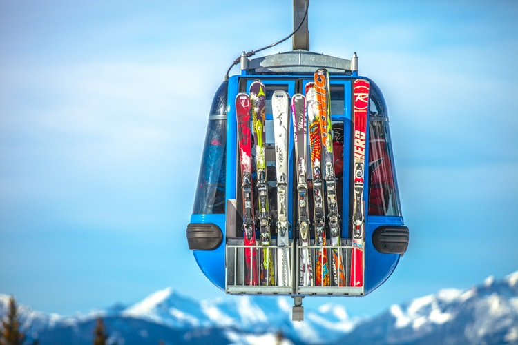

Hugo Unosson
Favoritintresse

VÖLKL RACETIGER SL
Tillverkarens beskrivning av mina favoritskidor:
Den alltid gula Racetiger SL är den svängigare tvillingen till Racetiger GS. Ett exakt och stadigt beteende samtidigt ännu roligare och lättåkt pistracer i och med nya konstruktionen med "3D.Glass" och nya vibrationsdämparen "UVO 3D". Hur bygger man en sådan? Tyska Völkl testar, mäter och räknar med decimaler på alla parametrar vilket till slut gör skillnad. En av få racecarve skidor med mycket sväng som även ger bra fartstabilitet vid längre svängar - måste upplevas! Lägg till den mycket viktiga detaljen att transportera ut krafterna maximalt från pjäxan ner i skidan och ut till stålkanten och de flesta börjar förstå varför den viktmodifierade World Cup bindningen Xcell sitter orginalmonterad på pistskidornas kung. Överlägset glid genom World Cup belaget P-Tex 4504.
Läs mer på Freeride